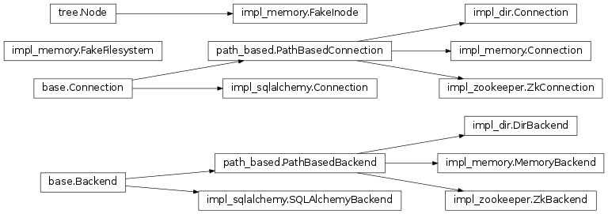

Persistence¶
Overview¶
In order to be able to receive inputs and create outputs from atoms (or other engine processes) in a fault-tolerant way, there is a need to be able to place what atoms output in some kind of location where it can be re-used by other atoms (or used for other purposes). To accommodate this type of usage TaskFlow provides an abstraction (provided by pluggable stevedore backends) that is similar in concept to a running programs memory.
This abstraction serves the following major purposes:
- Tracking of what was done (introspection).
- Saving memory which allows for restarting from the last saved state which is a critical feature to restart and resume workflows (checkpointing).
- Associating additional metadata with atoms while running (without having
those atoms need to save this data themselves). This makes it possible to
add-on new metadata in the future without having to change the atoms
themselves. For example the following can be saved:
- Timing information (how long a task took to run).
- User information (who the task ran as).
- When a atom/workflow was ran (and why).
- Saving historical data (failures, successes, intermediary results...) to allow for retry atoms to be able to decide if they should should continue vs. stop.
- Something you create...
How it is used¶
On engine construction typically a backend (it can be
optional) will be provided which satisfies the
Backend abstraction. Along with
providing a backend object a
FlowDetail object will also be
created and provided (this object will contain the details about the flow to be
ran) to the engine constructor (or associated load() helper functions). Typically a
FlowDetail object is created from a
LogBook object (the book object acts
as a type of container for FlowDetail
and AtomDetail objects).
Preparation: Once an engine starts to run it will create a
Storage object which will act as the engines
interface to the underlying backend storage objects (it provides helper
functions that are commonly used by the engine, avoiding repeating code when
interacting with the provided
FlowDetail and
Backend objects). As an engine
initializes it will extract (or create)
AtomDetail objects for each atom in
the workflow the engine will be executing.
Execution: When an engine beings to execute (see engine
for more of the details about how an engine goes about this process) it will
examine any previously existing
AtomDetail objects to see if they can
be used for resuming; see resumption for more details on
this subject. For atoms which have not finished (or did not finish correctly
from a previous run) they will begin executing only after any dependent inputs
are ready. This is done by analyzing the execution graph and looking at
predecessor AtomDetail outputs and
states (which may have been persisted in a past run). This will result in
either using their previous information or by running those predecessors and
saving their output to the FlowDetail
and Backend objects. This
execution, analysis and interaction with the storage objects continues (what is
described here is a simplification of what really happens; which is quite a bit
more complex) until the engine has finished running (at which point the engine
will have succeeded or failed in its attempt to run the workflow).
Post-execution: Typically when an engine is done running the logbook would be discarded (to avoid creating a stockpile of useless data) and the backend storage would be told to delete any contents for a given execution. For certain use-cases though it may be advantageous to retain logbooks and their contents.
A few scenarios come to mind:
- Post runtime failure analysis and triage (saving what failed and why).
- Metrics (saving timing information associated with each atom and using it to perform offline performance analysis, which enables tuning tasks and/or isolating and fixing slow tasks).
- Data mining logbooks to find trends (in failures for example).
- Saving logbooks for further forensics analysis.
- Exporting logbooks to hdfs (or other no-sql storage) and running some type of map-reduce jobs on them.
Note
It should be emphasized that logbook is the authoritative, and, preferably, the only (see inputs and outputs) source of run-time state information (breaking this principle makes it hard/impossible to restart or resume in any type of automated fashion). When an atom returns a result, it should be written directly to a logbook. When atom or flow state changes in any way, logbook is first to know (see notifications for how a user may also get notified of those same state changes). The logbook and a backend and associated storage helper class are responsible to store the actual data. These components used together specify the persistence mechanism (how data is saved and where – memory, database, whatever...) and the persistence policy (when data is saved – every time it changes or at some particular moments or simply never).
Usage¶
To select which persistence backend to use you should use the fetch() function which uses entrypoints
(internally using stevedore) to fetch and configure your backend. This makes
it simpler than accessing the backend data types directly and provides a common
function from which a backend can be fetched.
Using this function to fetch a backend might look like:
from taskflow.persistence import backends
...
persistence = backends.fetch(conf={
"connection': "mysql",
"user": ...,
"password": ...,
})
book = make_and_save_logbook(persistence)
...
As can be seen from above the conf parameter acts as a dictionary that
is used to fetch and configure your backend. The restrictions on it are
the following:
- a dictionary (or dictionary like type), holding backend type with key
'connection'and possibly type-specific backend parameters as other keys.
Types¶
Memory¶
Connection: 'memory'
Retains all data in local memory (not persisted to reliable storage). Useful for scenarios where persistence is not required (and also in unit tests).
Note
See MemoryBackend
for implementation details.
Files¶
Connection: 'dir' or 'file'
Retains all data in a directory & file based structure on local disk. Will be persisted locally in the case of system failure (allowing for resumption from the same local machine only). Useful for cases where a more reliable persistence is desired along with the simplicity of files and directories (a concept everyone is familiar with).
Note
See DirBackend
for implementation details.
SQLAlchemy¶
Connection: 'mysql' or 'postgres' or 'sqlite'
Retains all data in a ACID compliant database using the sqlalchemy library for schemas, connections, and database interaction functionality. Useful when you need a higher level of durability than offered by the previous solutions. When using these connection types it is possible to resume a engine from a peer machine (this does not apply when using sqlite).
Schema¶
Logbooks
| Name | Type | Primary Key |
|---|---|---|
| created_at | DATETIME | False |
| updated_at | DATETIME | False |
| uuid | VARCHAR | True |
| name | VARCHAR | False |
| meta | TEXT | False |
Flow details
| Name | Type | Primary Key |
|---|---|---|
| created_at | DATETIME | False |
| updated_at | DATETIME | False |
| uuid | VARCHAR | True |
| name | VARCHAR | False |
| meta | TEXT | False |
| state | VARCHAR | False |
| parent_uuid | VARCHAR | False |
Atom details
| Name | Type | Primary Key |
|---|---|---|
| created_at | DATETIME | False |
| updated_at | DATETIME | False |
| uuid | VARCHAR | True |
| name | VARCHAR | False |
| meta | TEXT | False |
| atom_type | VARCHAR | False |
| state | VARCHAR | False |
| intention | VARCHAR | False |
| results | TEXT | False |
| failure | TEXT | False |
| version | TEXT | False |
| parent_uuid | VARCHAR | False |
Note
See SQLAlchemyBackend
for implementation details.
Warning
Currently there is a size limit (not applicable for sqlite) that the
results will contain. This size limit will restrict how many prior
failures a retry atom can contain. More information and a future fix
will be posted to bug 1416088 (for the meantime try to ensure that
your retry units history does not grow beyond ~80 prior results). This
truncation can also be avoided by providing mysql_sql_mode as
traditional when selecting your mysql + sqlalchemy based
backend (see the mysql modes documentation for what this implies).
Zookeeper¶
Connection: 'zookeeper'
Retains all data in a zookeeper backend (zookeeper exposes operations on
files and directories, similar to the above 'dir' or 'file' connection
types). Internally the kazoo library is used to interact with zookeeper
to perform reliable, distributed and atomic operations on the contents of a
logbook represented as znodes. Since zookeeper is also distributed it is also
able to resume a engine from a peer machine (having similar functionality
as the database connection types listed previously).
Note
See ZkBackend
for implementation details.
Interfaces¶
-
taskflow.persistence.backends.fetch(conf, namespace='taskflow.persistence', **kwargs)[source]¶ Fetch a persistence backend with the given configuration.
This fetch method will look for the entrypoint name in the entrypoint namespace, and then attempt to instantiate that entrypoint using the provided configuration and any persistence backend specific kwargs.
NOTE(harlowja): to aid in making it easy to specify configuration and options to a backend the configuration (which is typical just a dictionary) can also be a URI string that identifies the entrypoint name and any configuration specific to that backend.
For example, given the following configuration URI:
mysql://<not-used>/?a=b&c=d
This will look for the entrypoint named ‘mysql’ and will provide a configuration object composed of the URI’s components, in this case that is
{'a': 'b', 'c': 'd'}to the constructor of that persistence backend instance.
-
taskflow.persistence.backends.backend(*args, **kwds)[source]¶ Fetches a backend, connects, upgrades, then closes it on completion.
This allows a backend instance to be fetched, connected to, have its schema upgraded (if the schema is already up to date this is a no-op) and then used in a context manager statement with the backend being closed upon context manager exit.
-
class
taskflow.persistence.base.Backend(conf)[source]¶ Bases:
objectBase class for persistence backends.
-
class
taskflow.persistence.base.Connection[source]¶ Bases:
objectBase class for backend connections.
-
backend¶ Returns the backend this connection is associated with.
-
validate()[source]¶ Validates that a backend is still ok to be used.
The semantics of this may vary depending on the backend. On failure a backend specific exception should be raised that will indicate why the failure occurred.
-
update_atom_details(atom_detail)[source]¶ Updates a given atom details and returns the updated version.
NOTE(harlowja): the details that is to be updated must already have been created by saving a flow details with the given atom detail inside of it.
-
update_flow_details(flow_detail)[source]¶ Updates a given flow details and returns the updated version.
NOTE(harlowja): the details that is to be updated must already have been created by saving a logbook with the given flow detail inside of it.
-
-
class
taskflow.persistence.path_based.PathBasedBackend(conf)[source]¶ Bases:
taskflow.persistence.base.BackendBase class for persistence backends that address data by path
Subclasses of this backend write logbooks, flow details, and atom details to a provided base path in some filesystem-like storage. They will create and store those objects in three key directories (one for logbooks, one for flow details and one for atom details). They create those associated directories and then create files inside those directories that represent the contents of those objects for later reading and writing.
-
DEFAULT_PATH= None¶ Default path used when none is provided.
-
-
class
taskflow.persistence.path_based.PathBasedConnection(backend)[source]¶ Bases:
taskflow.persistence.base.ConnectionBase class for path based backend connections.
Models¶
-
class
taskflow.persistence.models.LogBook(name, uuid=None)[source]¶ Bases:
objectA collection of flow details and associated metadata.
Typically this class contains a collection of flow detail entries for a given engine (or job) so that those entities can track what ‘work’ has been completed for resumption, reverting and miscellaneous tracking purposes.
The data contained within this class need not be persisted to the backend storage in real time. The data in this class will only be guaranteed to be persisted when a save occurs via some backend connection.
NOTE(harlowja): the naming of this class is analogous to a ship’s log or a similar type of record used in detailing work that has been completed (or work that has not been completed).
Variables: - created_at – A
datetime.datetimeobject of when this logbook was created. - updated_at – A
datetime.datetimeobject of when this logbook was last updated at. - meta – A dictionary of meta-data associated with this logbook.
-
pformat(indent=0, linesep='\n')[source]¶ Pretty formats this logbook into a string.
>>> from taskflow.persistence import models >>> tmp = models.LogBook("example") >>> print(tmp.pformat()) LogBook: 'example' - uuid = ... - created_at = ...
-
add(fd)[source]¶ Adds a new flow detail into this logbook.
NOTE(harlowja): if an existing flow detail exists with the same uuid the existing one will be overwritten with the newly provided one.
Does not guarantee that the details will be immediately saved.
-
find(flow_uuid)[source]¶ Locate the flow detail corresponding to the given uuid.
Returns: the flow detail with that uuid Return type: FlowDetail(orNoneif not found)
-
merge(lb, deep_copy=False)[source]¶ Merges the current object state with the given ones state.
If
deep_copyis provided as truthy then the local object will usecopy.deepcopyto replace this objects local attributes with the provided objects attributes (only if there is a difference between this objects attributes and the provided attributes). Ifdeep_copyis falsey (the default) then a reference copy will occur instead when a difference is detected.NOTE(harlowja): If the provided object is this object itself then no merging is done. Also note that this does not merge the flow details contained in either.
Returns: this logbook (freshly merged with the incoming object) Return type: LogBook
-
to_dict(marshal_time=False)[source]¶ Translates the internal state of this object to a
dict.NOTE(harlowja): The returned
dictdoes not include any contained flow details.Returns: this logbook in dictform
-
classmethod
from_dict(data, unmarshal_time=False)[source]¶ Translates the given
dictinto an instance of this class.NOTE(harlowja): the
dictprovided should come from a prior call toto_dict().Returns: a new logbook Return type: LogBook
-
uuid¶ The unique identifer of this logbook.
-
name¶ The name of this logbook.
-
copy(retain_contents=True)[source]¶ Copies this logbook.
Creates a shallow copy of this logbook. If this logbook contains flow details and
retain_contentsis truthy (the default) then the flow details container will be shallow copied (the flow details contained there-in will not be copied). Ifretain_contentsis falsey then the copied logbook will have no contained flow details (but it will have the rest of the local objects attributes copied).Returns: a new logbook Return type: LogBook
- created_at – A
-
class
taskflow.persistence.models.FlowDetail(name, uuid)[source]¶ Bases:
objectA collection of atom details and associated metadata.
Typically this class contains a collection of atom detail entries that represent the atoms in a given flow structure (along with any other needed metadata relevant to that flow).
The data contained within this class need not be persisted to the backend storage in real time. The data in this class will only be guaranteed to be persisted when a save (or update) occurs via some backend connection.
Variables: - state – The state of the flow associated with this flow detail.
- meta – A dictionary of meta-data associated with this flow detail.
-
update(fd)[source]¶ Updates the objects state to be the same as the given one.
This will assign the private and public attributes of the given flow detail directly to this object (replacing any existing attributes in this object; even if they are the same).
NOTE(harlowja): If the provided object is this object itself then no update is done.
Returns: this flow detail Return type: FlowDetail
-
pformat(indent=0, linesep='\n')[source]¶ Pretty formats this flow detail into a string.
>>> from oslo_utils import uuidutils >>> from taskflow.persistence import models >>> flow_detail = models.FlowDetail("example", ... uuid=uuidutils.generate_uuid()) >>> print(flow_detail.pformat()) FlowDetail: 'example' - uuid = ... - state = ...
-
merge(fd, deep_copy=False)[source]¶ Merges the current object state with the given one’s state.
If
deep_copyis provided as truthy then the local object will usecopy.deepcopyto replace this objects local attributes with the provided objects attributes (only if there is a difference between this objects attributes and the provided attributes). Ifdeep_copyis falsey (the default) then a reference copy will occur instead when a difference is detected.NOTE(harlowja): If the provided object is this object itself then no merging is done. Also this does not merge the atom details contained in either.
Returns: this flow detail (freshly merged with the incoming object) Return type: FlowDetail
-
copy(retain_contents=True)[source]¶ Copies this flow detail.
Creates a shallow copy of this flow detail. If this detail contains flow details and
retain_contentsis truthy (the default) then the atom details container will be shallow copied (the atom details contained there-in will not be copied). Ifretain_contentsis falsey then the copied flow detail will have no contained atom details (but it will have the rest of the local objects attributes copied).Returns: a new flow detail Return type: FlowDetail
-
to_dict()[source]¶ Translates the internal state of this object to a
dict.NOTE(harlowja): The returned
dictdoes not include any contained atom details.Returns: this flow detail in dictform
-
classmethod
from_dict(data)[source]¶ Translates the given
dictinto an instance of this class.NOTE(harlowja): the
dictprovided should come from a prior call toto_dict().Returns: a new flow detail Return type: FlowDetail
-
add(ad)[source]¶ Adds a new atom detail into this flow detail.
NOTE(harlowja): if an existing atom detail exists with the same uuid the existing one will be overwritten with the newly provided one.
Does not guarantee that the details will be immediately saved.
-
find(ad_uuid)[source]¶ Locate the atom detail corresponding to the given uuid.
Returns: the atom detail with that uuid Return type: AtomDetail(orNoneif not found)
-
uuid¶ The unique identifer of this flow detail.
-
name¶ The name of this flow detail.
-
class
taskflow.persistence.models.AtomDetail(name, uuid)[source]¶ Bases:
objectA collection of atom specific runtime information and metadata.
This is a base abstract class that contains attributes that are used to connect a atom to the persistence layer before, during, or after it is running. It includes any results it may have produced, any state that it may be in (for example
FAILURE), any exception that occurred when running, and any associated stacktrace that may have occurring during an exception being thrown. It may also contain any other metadata that should also be stored along-side the details about the connected atom.The data contained within this class need not be persisted to the backend storage in real time. The data in this class will only be guaranteed to be persisted when a save (or update) occurs via some backend connection.
Variables: - state – The state of the atom associated with this atom detail.
- intention – The execution strategy of the atom associated with this atom detail (used by an engine/others to determine if the associated atom needs to be executed, reverted, retried and so-on).
- meta – A dictionary of meta-data associated with this atom detail.
- version – A version tuple or string that represents the atom version this atom detail is associated with (typically used for introspection and any data migration strategies).
- results – Any results the atom produced from either its
executemethod or from other sources. - revert_results – Any results the atom produced from either its
revertmethod or from other sources. - failure – If the atom failed (due to its
executemethod raising) this will be aFailureobject that represents that failure (if there was no failure this will be set to none). - revert_failure – If the atom failed (possibly due to its
revertmethod raising) this will be aFailureobject that represents that failure (if there was no failure this will be set to none).
-
last_results¶ Gets the atoms last result.
If the atom has produced many results (for example if it has been retried, reverted, executed and ...) this returns the last one of many results.
-
update(ad)[source]¶ Updates the object’s state to be the same as the given one.
This will assign the private and public attributes of the given atom detail directly to this object (replacing any existing attributes in this object; even if they are the same).
NOTE(harlowja): If the provided object is this object itself then no update is done.
Returns: this atom detail Return type: AtomDetail
-
merge(other, deep_copy=False)[source]¶ Merges the current object state with the given ones state.
If
deep_copyis provided as truthy then the local object will usecopy.deepcopyto replace this objects local attributes with the provided objects attributes (only if there is a difference between this objects attributes and the provided attributes). Ifdeep_copyis falsey (the default) then a reference copy will occur instead when a difference is detected.NOTE(harlowja): If the provided object is this object itself then no merging is done. Do note that no results are merged in this method. That operation must to be the responsibilty of subclasses to implement and override this abstract method and provide that merging themselves as they see fit.
Returns: this atom detail (freshly merged with the incoming object) Return type: AtomDetail
-
to_dict()[source]¶ Translates the internal state of this object to a
dict.Returns: this atom detail in dictform
-
classmethod
from_dict(data)[source]¶ Translates the given
dictinto an instance of this class.NOTE(harlowja): the
dictprovided should come from a prior call toto_dict().Returns: a new atom detail Return type: AtomDetail
-
uuid¶ The unique identifer of this atom detail.
-
name¶ The name of this atom detail.
-
class
taskflow.persistence.models.TaskDetail(name, uuid)[source]¶ Bases:
taskflow.persistence.models.AtomDetailA task detail (an atom detail typically associated with a
Taskatom).-
reset(state)[source]¶ Resets this task detail and sets
stateattribute value.This sets any previously set
results,failure, andrevert_resultsattributes back toNoneand sets the state to the provided one, as well as setting this task detailsintentionattribute toEXECUTE.
-
put(state, result)[source]¶ Puts a result (acquired in the given state) into this detail.
Returns whether this object was modified (or whether it was not).
-
merge(other, deep_copy=False)[source]¶ Merges the current task detail with the given one.
NOTE(harlowja): This merge does not copy and replace the
resultsorrevert_resultsif it differs. Instead the current objectsresultsandrevert_resultsattributes directly becomes (via assignment) the other objects attributes. Also note that if the provided object is this object itself then no merging is done.See: https://bugs.launchpad.net/taskflow/+bug/1452978 for what happens if this is copied at a deeper level (for example by using
copy.deepcopyor by usingcopy.copy).Returns: this task detail (freshly merged with the incoming object) Return type: TaskDetail
-
copy()[source]¶ Copies this task detail.
Creates a shallow copy of this task detail (any meta-data and version information that this object maintains is shallow copied via
copy.copy).NOTE(harlowja): This copy does not copy and replace the
resultsorrevert_resultsattribute if it differs. Instead the current objectsresultsandrevert_resultsattributes directly becomes (via assignment) the cloned objects attributes.See: https://bugs.launchpad.net/taskflow/+bug/1452978 for what happens if this is copied at a deeper level (for example by using
copy.deepcopyor by usingcopy.copy).Returns: a new task detail Return type: TaskDetail
-
-
class
taskflow.persistence.models.RetryDetail(name, uuid)[source]¶ Bases:
taskflow.persistence.models.AtomDetailA retry detail (an atom detail typically associated with a
Retryatom).-
reset(state)[source]¶ Resets this retry detail and sets
stateattribute value.This sets any previously added
resultsback to an empty list and resets thefailureandrevert_failureandrevert_resultsattributes back toNoneand sets the state to the provided one, as well as setting this retry detailsintentionattribute toEXECUTE.
-
copy()[source]¶ Copies this retry detail.
Creates a shallow copy of this retry detail (any meta-data and version information that this object maintains is shallow copied via
copy.copy).NOTE(harlowja): This copy does not copy the incoming objects
resultsorrevert_resultsattributes. Instead this objectsresultsattribute list is iterated over and a new list is constructed with each(data, failures)element in that list having itsfailures(a dictionary of each namedFailureobject that occured) copied but itsdatais left untouched. After this is done that new list becomes (via assignment) the cloned objectsresultsattribute. Therevert_resultsis directly assigned to the cloned objectsrevert_resultsattribute.See: https://bugs.launchpad.net/taskflow/+bug/1452978 for what happens if the
datainresultsis copied at a deeper level (for example by usingcopy.deepcopyor by usingcopy.copy).Returns: a new retry detail Return type: RetryDetail
-
last_results¶ The last result that was produced.
-
last_failures¶ The last failure dictionary that was produced.
NOTE(harlowja): This is not the same as the local
failureattribute as the obtained failure dictionary in theresultsattribute (which is what this returns) is from associated atom failures (which is different from the directly related failure of the retry unit associated with this atom detail).
-
put(state, result)[source]¶ Puts a result (acquired in the given state) into this detail.
Returns whether this object was modified (or whether it was not).
-
merge(other, deep_copy=False)[source]¶ Merges the current retry detail with the given one.
NOTE(harlowja): This merge does not deep copy the incoming objects
resultsattribute (if it differs). Instead the incoming objectsresultsattribute list is always iterated over and a new list is constructed with each(data, failures)element in that list having itsfailures(a dictionary of each namedFailureobjects that occurred) copied but itsdatais left untouched. After this is done that new list becomes (via assignment) this objectsresultsattribute. Also note that if the provided object is this object itself then no merging is done.See: https://bugs.launchpad.net/taskflow/+bug/1452978 for what happens if the
datainresultsis copied at a deeper level (for example by usingcopy.deepcopyor by usingcopy.copy).Returns: this retry detail (freshly merged with the incoming object) Return type: RetryDetail
-
Implementations¶
Memory¶
-
class
taskflow.persistence.backends.impl_memory.FakeInode(item, path, value=None)[source]¶ Bases:
taskflow.types.tree.NodeA in-memory filesystem inode-like object.
-
class
taskflow.persistence.backends.impl_memory.FakeFilesystem(deep_copy=True)[source]¶ Bases:
objectAn in-memory filesystem-like structure.
This filesystem uses posix style paths only so users must be careful to use the
posixpathmodule instead of theos.pathone which will vary depending on the operating system which the active python is running in (the decision to useposixpathwas to avoid the path variations which are not relevant in an implementation of a in-memory fake filesystem).Not thread-safe when a single filesystem is mutated at the same time by multiple threads. For example having multiple threads call into
clear()at the same time could potentially end badly. It is thread-safe when onlyget()or other read-only actions (like calling intols()) are occurring at the same time.Example usage:
>>> from taskflow.persistence.backends import impl_memory >>> fs = impl_memory.FakeFilesystem() >>> fs.ensure_path('/a/b/c') >>> fs['/a/b/c'] = 'd' >>> print(fs['/a/b/c']) d >>> del fs['/a/b/c'] >>> fs.ls("/a/b") [] >>> fs.get("/a/b/c", 'blob') 'blob'
-
root_path= '/'¶ Root path of the in-memory filesystem.
-
static
split(p)¶ Split a pathname into a tuple of
(head, tail).
-
-
class
taskflow.persistence.backends.impl_memory.MemoryBackend(conf=None)[source]¶ Bases:
taskflow.persistence.path_based.PathBasedBackendA in-memory (non-persistent) backend.
This backend writes logbooks, flow details, and atom details to a in-memory filesystem-like structure (rooted by the
memoryinstance variable).This backend does not provide true transactional semantics. It does guarantee that there will be no inter-thread race conditions when writing and reading by using a read/write locks.
-
DEFAULT_PATH= '/'¶ Default path used when none is provided.
-
Files¶
-
class
taskflow.persistence.backends.impl_dir.DirBackend(conf)[source]¶ Bases:
taskflow.persistence.path_based.PathBasedBackendA directory and file based backend.
This backend does not provide true transactional semantics. It does guarantee that there will be no interprocess race conditions when writing and reading by using a consistent hierarchy of file based locks.
Example configuration:
conf = { "path": "/tmp/taskflow", # save data to this root directory "max_cache_size": 1024, # keep up-to 1024 entries in memory }
-
DEFAULT_FILE_ENCODING= 'utf-8'¶ Default encoding used when decoding or encoding files into or from text/unicode into binary or binary into text/unicode.
-
SQLAlchemy¶
-
class
taskflow.persistence.backends.impl_sqlalchemy.SQLAlchemyBackend(conf, engine=None)[source]¶ Bases:
taskflow.persistence.base.BackendA sqlalchemy backend.
Example configuration:
conf = { "connection": "sqlite:////tmp/test.db", }
Zookeeper¶
-
class
taskflow.persistence.backends.impl_zookeeper.ZkBackend(conf, client=None)[source]¶ Bases:
taskflow.persistence.path_based.PathBasedBackendA zookeeper-backed backend.
Example configuration:
conf = { "hosts": "192.168.0.1:2181,192.168.0.2:2181,192.168.0.3:2181", "path": "/taskflow", }
Do note that the creation of a kazoo client is achieved by
make_client()and the transfer of this backend configuration to that function to make a client may happen at__init__time. This implies that certain parameters from this backend configuration may be provided tomake_client()such that if a client was not provided by the caller one will be created according tomake_client()‘s specification-
DEFAULT_PATH= '/taskflow'¶ Default path used when none is provided.
-
Storage¶
-
class
taskflow.storage.Storage(flow_detail, backend=None, scope_fetcher=None)[source]¶ Bases:
objectInterface between engines and logbook and its backend (if any).
This class provides a simple interface to save atoms of a given flow and associated activity and results to persistence layer (logbook, atom_details, flow_details) for use by engines. This makes it easier to interact with the underlying storage & backend mechanism through this interface rather than accessing those objects directly.
NOTE(harlowja): if no backend is provided then a in-memory backend will be automatically used and the provided flow detail object will be placed into it for the duration of this objects existence.
-
injector_name= '_TaskFlow_INJECTOR'¶ Injector task detail name.
This task detail is a special detail that will be automatically created and saved to store persistent injected values (name conflicts with it must be avoided) that are global to the flow being executed.
-
ensure_atoms(*args, **kwargs)[source]¶ Ensure there is an atomdetail for each of the given atoms.
Returns list of atomdetail uuids for each atom processed.
-
lock¶ Reader/writer lock used to ensure multi-thread safety.
This does not protect against the same storage objects being used by multiple engines/users across multiple processes (or different machines); certain backends handle that situation better than others (for example by using sequence identifiers) and it’s a ongoing work in progress to make that better).
-
ensure_atom(atom)[source]¶ Ensure there is an atomdetail for the given atom.
Returns the uuid for the atomdetail that corresponds to the given atom.
-
flow_name¶ The flow detail name this storage unit is associated with.
-
flow_uuid¶ The flow detail uuid this storage unit is associated with.
-
flow_meta¶ The flow detail metadata this storage unit is associated with.
-
backend¶ The backend this storage unit is associated with.
-
get_atoms_states(*args, **kwargs)[source]¶ Gets a dict of atom name => (state, intention) given atom names.
-
update_atom_metadata(atom_name, update_with)[source]¶ Updates a atoms associated metadata.
This update will take a provided dictionary or a list of (key, value) pairs to include in the updated metadata (newer keys will overwrite older keys) and after merging saves the updated data into the underlying persistence layer.
-
set_task_progress(task_name, progress, details=None)[source]¶ Set a tasks progress.
Parameters: - task_name – task name
- progress – tasks progress (0.0 <-> 1.0)
- details – any task specific progress details
-
get_task_progress(*args, **kwargs)[source]¶ Get the progress of a task given a tasks name.
Parameters: task_name – tasks name Returns: current task progress value
-
get_task_progress_details(*args, **kwargs)[source]¶ Get the progress details of a task given a tasks name.
Parameters: task_name – task name Returns: None if progress_details not defined, else progress_details dict
-
get(atom_name)¶ Gets the
executeresults for an atom from storage.
-
get_failures()¶ Get all
executefailures that happened with this flow.
-
inject_atom_args(atom_name, pairs, transient=True)[source]¶ Add values into storage for a specific atom only.
Parameters: transient – save the data in-memory only instead of persisting the data to backend storage (useful for resource-like objects or similar objects which can not be persisted) This method injects a dictionary/pairs of arguments for an atom so that when that atom is scheduled for execution it will have immediate access to these arguments.
Note
Injected atom arguments take precedence over arguments provided by predecessor atoms or arguments provided by injecting into the flow scope (using the
inject()method).Warning
It should be noted that injected atom arguments (that are scoped to the atom with the given name) should be serializable whenever possible. This is a requirement for the worker based engine which must serialize (typically using
json) all atomexecute()andrevert()arguments to be able to transmit those arguments to the target worker(s). If the use-case being applied/desired is to later use the worker based engine then it is highly recommended to ensure all injected atoms (even transient ones) are serializable to avoid issues that may appear later (when a object turned out to not actually be serializable).
-
inject(*args, **kwargs)[source]¶ Add values into storage.
This method should be used to put flow parameters (requirements that are not satisfied by any atom in the flow) into storage.
Parameters: transient – save the data in-memory only instead of persisting the data to backend storage (useful for resource-like objects or similar objects which can not be persisted) Warning
It should be noted that injected flow arguments (that are scoped to all atoms in this flow) should be serializable whenever possible. This is a requirement for the worker based engine which must serialize (typically using
json) all atomexecute()andrevert()arguments to be able to transmit those arguments to the target worker(s). If the use-case being applied/desired is to later use the worker based engine then it is highly recommended to ensure all injected atoms (even transient ones) are serializable to avoid issues that may appear later (when a object turned out to not actually be serializable).
-
fetch_unsatisfied_args(*args, **kwargs)[source]¶ Fetch unsatisfied
executearguments using an atoms args mapping.NOTE(harlowja): this takes into account the provided scope walker atoms who should produce the required value at runtime, as well as the transient/persistent flow and atom specific injected arguments. It does not check if the providers actually have produced the needed values; it just checks that they are registered to produce it in the future.
-
fetch_mapped_args(*args, **kwargs)[source]¶ Fetch
executearguments for an atom using its args mapping.
-
change_flow_state(*args, **kwargs)[source]¶ Transition flow from old state to new state.
Returns
(True, old_state)if transition was performed, or(False, old_state)if it was ignored, or raises aInvalidStateexception if transition is invalid.
-
Hierarchy¶
